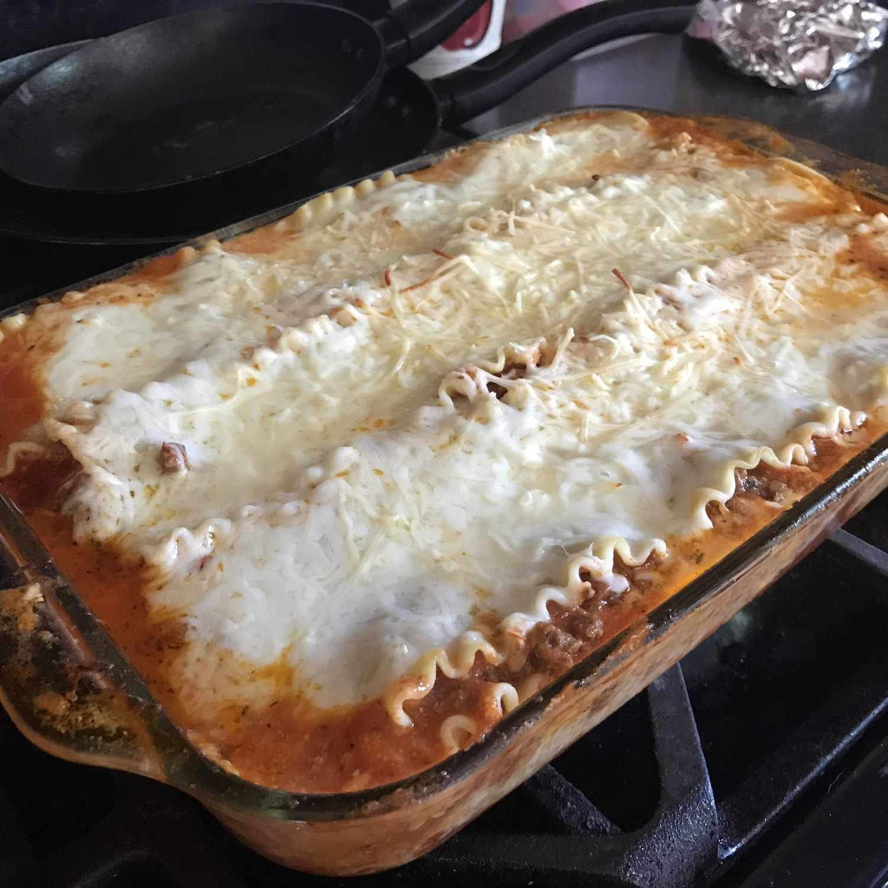

Lasagna Recipe

Making perfect homemade lasagna doesn't have to be tedious. This top-rated
easy lasagna recipe comes together quickly with a relatively short ingredient list.
Ingredients
- Beef
- Spaghetti Sauce
- Cheese
- Eggs
- Seasonings
- Lasagna Noodles
- Water
Easy Cooking Instructions
You'll find the full step-by-step recipe below:
- Cook and drain the ground beef, then stir in the spaghetti sauce and simmer.
- Combine cottage cheese, 2 cups of mozzarella, eggs, half of the parmesan and seasonings
- Assemble the lasagna according to the recipe in layers
- Bake, covered, for 45 mintues.
- Uncover and continue baking for 10 minutes.